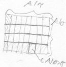
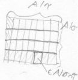

⇒
- π:A↠A/~f is a surjective (canonical) homomorphism.
- g̅:A/~f→B homomorph ⇔ g̅∘π homomorph (and g̅ surjective ⇔ g̅∘π surjective).
- ∃!f̅:A/~f→B homomorph such that f = f̅∘π.
- f̅ is injective.
- A/~f ≅ Im(f) (≅A/Ker(f) for groups).
Let f:G→G' be a homomorphism of groups, with N⊴G and N⊆Ker(f)
⇒
- ∃!f̅:G/N→G' homomorph of groups such that f = f̅∘π
⇒
- B/~∩B×B ≅ B̅/~
⇒
- The congruences on A/σ are τ/σ for a congruence τ⊇σ on A.
- ∃!f:A/σ↠A/τ epimorphism such that πτ = f∘πσ
- ~f = τ/σ
- (A/σ)/(τ/σ) ≅ A/τ
 
"4. Homomorphiesatz, Parallel Decomposition ≙Chinese Remainder
Theorem?"

"4. Homomorphiesatz, Parallel Decomposition ≙Chinese Remainder
Theorem?"i.e. <σ,τ>EquivalenceClosure = 1 = ⊤ = A×A.
⇒
- A/σ × A/τ ≅ A/σ∩τ
- I1,…,In are coprime, i.e. ∀ν≠μ Iν+Iμ:=(Iν∪Iμ) = R
- ⇔ R/⋂ν=1,...,n Iν ≅ ∏ν=1,...,n R/Iν (injective by construction)
- ⋂ν=1,...,n Iν = I1⋅ … ⋅In (equivalent to (i) and (ii) if R is a principal ideal integrity domain)